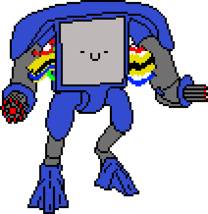
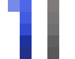
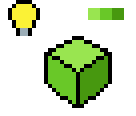
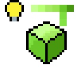
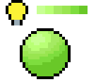

Colouring & Shading
Colour Palettes
First things first, to colour an object (and shade it) you will need to know what colour you want it to be. Let's start an example with a machine I sprited and coloured in with basic colours.
A good tip I'd like to give is to use an extra layer and colour in the sprite you make with the fill tool first, when you have the whole thing coloured like this it is easy to see if you like the colour scheme before getting too much work done.
Now, when shading, you create a colour palette for shading, keep in mind two things: Light causes both shadows, and bright spots. So, to begin, get the main colours for your sprite, mine are blue and grey, and create a strip of colours for each one, with different shades of the colour. Here is my example:
Now that you have the shades you will use, let's learn how to use them.
Shading Flat Objects
Shading is relatively straightforward when the object that you are shading is flat, such as a cube, or a building, or a desk. Simply picture a light source that is pointing at the object.
The face that is directly facing the light will be the brightest shade, the face that is facing away from the light will get the darkest shade. It's as simple as that to understand the basics of shading.
You can also get more complex with your shading depending on the texture of your object. There are lots of different ways to shade different textures, but as an example here is a very shiny reflective box:
Shading Round Objects
Shading a round object follows the same principles as shading flat ones, but with some differences. You will still obviously be putting the the lightest shade towards the light source and the darkest shade away from it.
Since the object is round, the shade that serves as the highlight would also be circular, and the other shades will ripple around it in order from lightest to darkest. After the equator line, the light will not reach it and so the rest of the object remains the same shade as the equator.
If you'd like to get more technical and realistic, the very opposite end of the light source is slightly brighter than the equator due to reflected light, but it is not important at the small scale that pixel art usually is.
Now that you know how to shade both round and flat objects, you can use these skills to shade more complex shapes by breaking them down into round and flat shapes.
Here is my robot art from before, this time shaded using the colour palette and techniques learned here
One last thing to keep in mind is that no two people will make pixel art the same way, otherwise art would be boring. This is a good way to learn to start making art, but it is a good idea to experiment with different ways of drawing lines, or your own way of colouring and shading. Make your own style and have fun.
Previous Lesson Return to Top Next Lesson